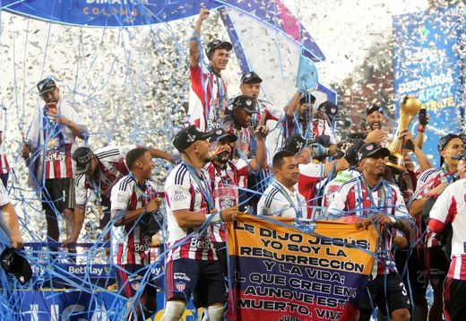
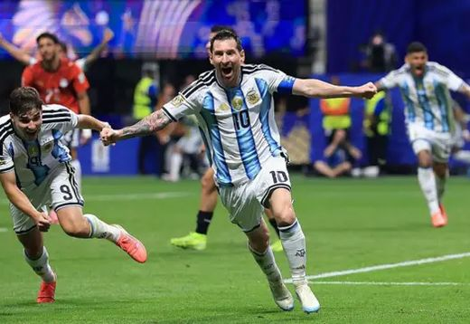
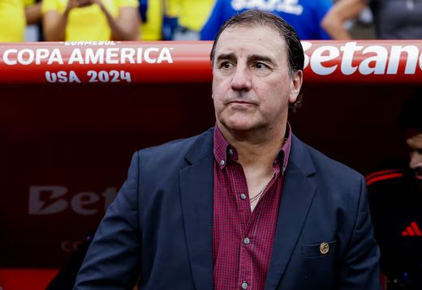

Equipos · Liga BetPlay
Junior FC
Todo lo del tiburón en un solo lugar: los videos del canal, el análisis escrito y el minuto a minuto de los fichajes. Lo que se habla de Junior, lo hablamos aquí.
128 contenidos publicados

Lo más visto de Junior
Cuadrado a Junior: ¿qué hay de cierto?
Bajamos la ilusión a tierra: qué dice el entorno del jugador, qué puede pagar el tiburón y por qué el mercado todavía no cierra. El análisis completo, en El show de la mañana.

15 de Julio, 2026
Oficial: Junior renueva a su goleador hasta 2028

14 de Julio, 2026
¿Llegará? Juanfer Quintero y su posible regreso a Junior

13 de Julio, 2026
¡Sorpresiva llegada! El refuerzo de Junior que pocos esperaban

13 de Julio, 2026
Recorriendo el Supermetro: el alcalde habló de Junior

12 de Julio, 2026
El Metropolitano se vistió de fiesta ante Nacional

11 de Julio, 2026
¿Jhomier Guerrero a Millonarios? La salida del lateral de Junior

10 de Julio, 2026
Lo que dijo el técnico tras el clásico caribeño

9 de Julio, 2026
Junior, bicampeón: la crónica de una noche histórica

8 de Julio, 2026
El once ideal de Junior para el segundo semestre

7 de Julio, 2026
Rumor: un volante argentino en la órbita del tiburón
6 de Julio, 2026
Cantera tiburona: los juveniles que asoman en la Sub-20
5 de Julio, 2026
Análisis: así llega Junior a la recta final de la Liga
No hay contenidos de este tipo por ahora. Prueba con otro filtro.